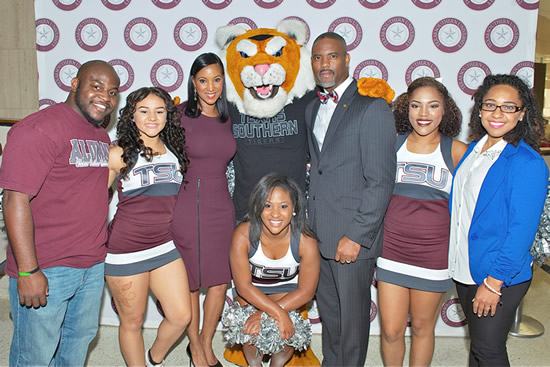

-
Current Student
What's Inside?Google Apps:Google Gmail (Email), Google Talk / Chat, Google Docs, Google Calendar, Google Home Page etc.
-
FUNDING GRADUATE SCHOOL
Your gift has a significant impact on the lives of TSU students and our community. There are...
-

Student Orientation
Spring 2017 Orientation Saturday, January 14, 2017 9:30 AM - 12:30 PM Recreation Center...
-

Office of the President
On behalf of my wife, Loren and our family, I want to thank each of you for allowing me to serve as your 12th president....
School of Graduate Studies
The mission of the School of Graduate Studies & Research is to produce individuals who have advanced knowledge in their fields, appreciate learning,are prepared to excel in their future careers, and can contribute to the quality of life in a global society.
JHJ Graduate
The Graduate School strongly encourages you to attend a prospective student information session to discover the many opportunities awaiting you at the Jessie H. Jones School (JHJ) of Business at Texas Southern University. JHJ offers over 5 graduate programs in several different areas of concentration. If you are unsure of the program you wish to study, begin by attending one of our General Information Sessions. Space is limited, so RSVP today. We have a myriad of ways for you to participate in an information session so RSVP today, we look forward to meeting you!
School of Public Affairs
n extensive set of curricular offerings is provided through the Barbara Jordan-Mickey Leland School of Public Affairs that includes courses in Administration of Justice (AJ), Political Science (POLS), Public Affairs (PA), and Military Science (MSCI), as well as three undergraduate degrees and five graduate degrees. At the undergraduate level, the Bachelor of Science (B.S.) in Public Affairs, the Bachelor of Science (B.S.) in Administration of Justice, and the Bachelor of Arts (B.A.) in Political Science are offered. At the graduate level, the Master of Public Administration, Master of Administration of Justice, Doctor of Philosophy in Administration of Justice, Master of Urban Planning and Environmental Policy and Doctor of Philosophy in Urban Planning and Environmental Policy are offered. In addition to course and degree offerings, students with majors in other departments may declare minors in the four disciplines offered through this unit; Administration of Justice, Political Science, Public Affairs, and Military Science.
College of Pharmacy and Health Sciences
Administratively, the College is organized with a Dean, an Associate Dean for Academic Affairs, an Assistant Dean for Student Services, an Assistant Dean for Assessment, and three Faculty Chairs. The Associate Dean for Academic Affairs is responsible for all academic matters of the College and, in the absence of the Dean, is responsible for the operations of the College. The Assistant Dean for Student Services coordinates all student related organizations and activities, including admissions, registration, counseling, and academic advising. The Assistant Dean for Assessment performs programmatic and curricular assessments. The faculty chairs are responsible for the administration of the didactic and experiential components of all programs.